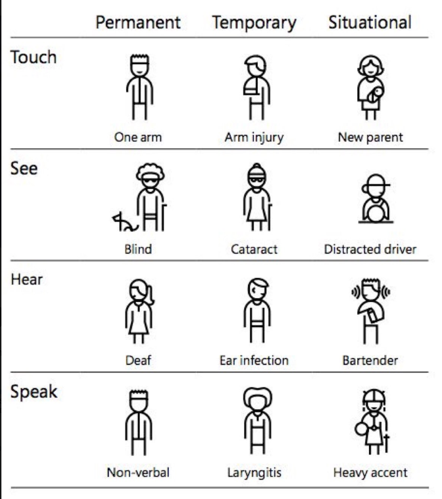

Lär dig skriva tillgänglig kod
Denna sida är till för att laborera med hur hen skriver tillgänglig
html. Den syftar till att göra det tydligt vad en användare ser och
vad en användare hör med hjälp av skärmläsare?
Text-innehåll på denna sidan är delvis hämtat från
webbriktlinjer.se
Vad är tillgänglighet
Begreppet tillgänglighet är centralt i Vägledningen för webbutveckling. Det gäller delvis med den breda betydelsen att information och tjänster ska gå att nå (servern åtkomlig, filformatet läsbart, säkerheten god, prestanda acceptabel och så vidare). Men framför allt gäller det här i betydelsen att information och tjänster ska kunna användas av alla människor oavsett till exempel funktionsnedsättning (eller ”bredast möjliga spektrum av egenskaper och förmågor” som det står i definitionen av ”tillgänglighet” i ISO-standarden 26 800).
Olika typer av funktionsnedsättningar
| Typ av funktionsnedsättning | Permanent | Tillfällig | Situationsbunden |
|---|---|---|---|
| Känsel | En arm | Armskapa | Nybliven förälder som bär barn på ena armen |
| Syn | Blind | Gråstarr | Distraherad chaufför |
| Hörsel | Döv | Öroninfektion | Bartender på en högljudd bar |
| Språk | Dövstum | Strupkatarr | Person som pratar med bred dialekt |